Subeditors
Battle Backdrops
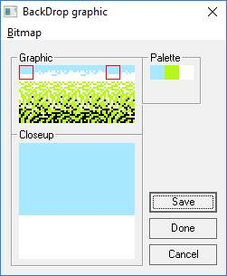
Edit the tiles for the selected battle backdrop.
The tiles can be exported as a bitmap, and modified bitmaps can be
subsequently imported; this allows you to use an external image editor
to modify the tile image.
Take care tto respect the expectation that this bitmap should be either 16 color (4-bit)
or 256 colors (8-bit).
The battle backdrop is tied to the overworld tile that sends you into a standard map. In the Overworld Editor, when you click a source tile, the backdrop for that tile appears in the Battle Backdrop area.
Battle Palettes
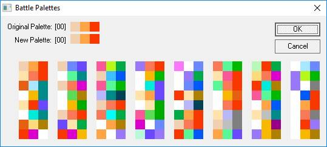
Select the palettes used for the currently selected battke.
Simply click the palette you want to use and press OK to apply it
to the battle.
Remember that the enemy graphics are grouped into pattern tables (essentially groups of tiles), and palettes are applied to those tables. For that reason, palettes are specified for battles instead of individual enemies.
Battle Pattern Tables
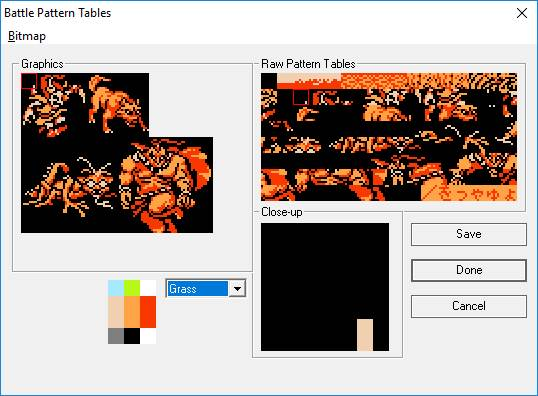
Edit the pattern table that comprise a set of enemies.
Pattern tables contain 4 enemies, two large on the top row and two small on the bottom row.
The pattern table itself is (in essence) a run of tiles that can be arranged to form images.
FFH introduced this editor, which arranges the relevant table's tiles into an editable image.
Also, you can export the pattern table to a bitmap, edit that with an external editor,
and import the result.
Take care tto respect the expectation that this bitmap should be either 16 color (4-bit)
or 256 colors (8-bit).
Battle Sprites
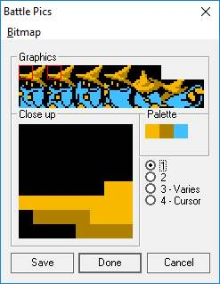
Edit the frames and palette used for the character battle.
The tiles can be exported to a bitmap and imported after external editing.
Note that palettes 3 (Varies) and 4 (Cursor) are unstable palettes and are not typically used for battle sprites.
Coords
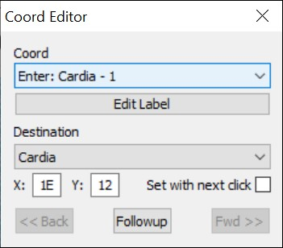
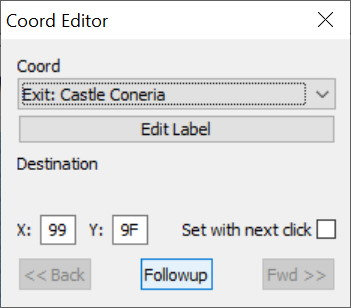
Coords is a subeditor for the game's teleport-to-coordinates feature.
Stepping on teleport or warp tiles (e.g. staircases and exits) will send the party to a specific
position called a Coord. This can be on a standard map or the overworld map.
| Field | Detail |
|---|---|
| Coord | The user-definable label for the selected coord. |
| Destination | Specifies the X pos, Y pos, and (if applicable) the standard map. |
| << Back | If this dialog was invoked from another coord/teleport, go back to that coord. |
| Fwd >> | If we came back here from another coord/teleport, go to the next coord. |
| Followup | Follow the coord/teleport to its target map and scroll the target position into view. |
| Set with next click | When checked, the next left-click on the map will set the X and Y positions. Once that click happens, the check box clears automatically. |
When clicked, the Back, Followup, and Fwd buttons will take you to the specified target position, switching maps if necessary. In the original game there are three types of teleports:
- Outside to Inside (ON) moves the party from the Overworld to a Standard map.
- Inside to Inside (NN) moves the party between two Standard maps.
- Inside to Outside (NO) moves the party from a Standard map to the Overworld.
ON coords are prefixed with "Enter", while NO coords are prefixed with "Exit".
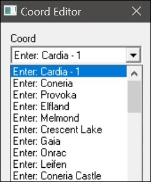
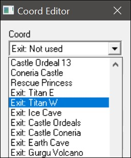
Customizable Map Tools
Overworld
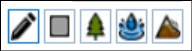
- The Pencil icon draws the selected source tile at the selected map tile.
- The Rectangle icon fills the rectangle you draw with the selected source tile.
- The Tree icon autofills the rectangle you draw with a pattern - by default, trees.
- The Water icon autofills the rectangle you draw with a pattern - by default, ocean water.
- The Mountain icon autofills the rectangle you draw with a pattern - by default, mountains.
Standard Maps
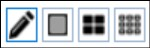
- The Pencil icon draws the selected source tile at the selected map tile.
- The Rectangle icon fills the rectangle you draw with the selected source tile.
- The Double Rectangle icon autofills the rectangle you draw with a pattern - by default, large window houses.
- The Mountain icon autofills the rectangle you draw with a pattern - by default, small window houses.
Customize Tool Window and Autofill
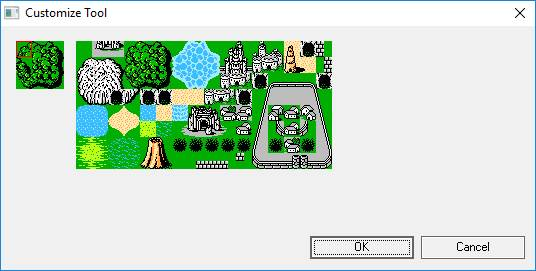
Autofill rectangles use the pattern defined by the Customize Tool window. Select a tool that supports
autofill and click the Customize Tool button to access the window.
The pattern consists of three rows of three tiles, used as follows:
| Top row | Top left corner | Interior top row tiles | Top right corner |
| Interior rows | Left tile | Interior inner row tiles | Right tile |
| Bottom row | Bottom left corner | Interior bottom row tiles | Bottom right corner |
This tool will save you a lot of time when you need to draw a large swath of tiles. Since the pattern defines edge and corner tiles, you don't have to go back to set them manually; the tool does it for you.
Another time saver is the fact that the Customized tools handle overlapped drawing of the same type of tool. For example, if you draw a rectangle to define a range of mountains, you can draw another rectangle of the same type that overlaps it, and the tool will handle the edge tiles for you.
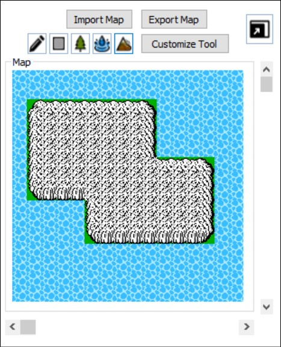
Map Sprites
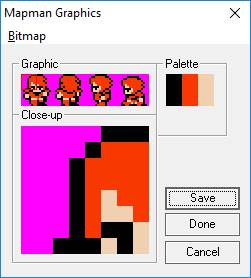
Edit the frames and palette used for the character battle.
The tiles can be exported to a bitmap and imported after external editing.
The palette is presented as two rows of 3 colors, used as follows:
| Top half | Shared Border | Unique Hair/Hat | Shared Skin Tone |
| Bottom half | Shared Border | Unique Clothes Color | Shared Skin Tone |
Be careful: the shared colors are used for ALL classes.
MiniMap
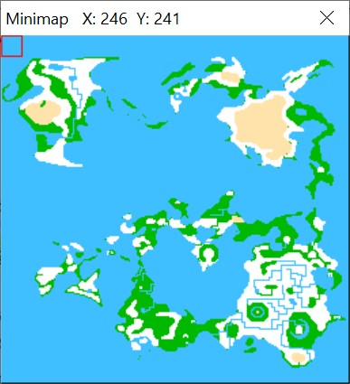
- The map is composed of tiles that are 16 x 16 pixels.
- Each point represents a tile area of 16 columns x 16 rows.
- There are 256 columns and 256 rows on the world map.
- The world map is 4096 x 4096 pixels in size.
NES Palette
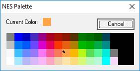
Click a color to select it.
Tiles
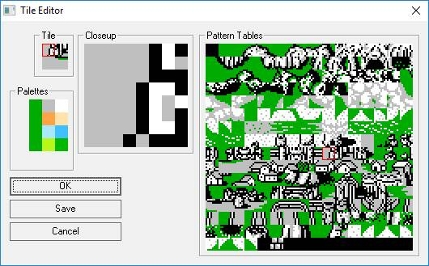
- Change the portions of the pattern table used in the selected tileUse the Tile pane to select a portion of the tile to replace.Select a different tile in the Pattern Table pane.The new portion will replace the previous one.
- Edit the pixels of the selected portions of the patterns tableUse the Tile pane to select a portion of the tile to edit; it will appear in the Closeup pane.Select a color from the Palette area.Then, left click a pixel in the Closeup to set it to the selected color.Right click a pixel to set it to the background color (black).
Tint
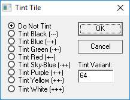
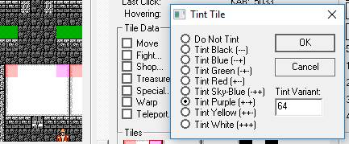
Weapon and Magic Graphics
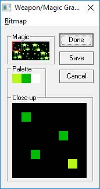
- Click a color in the palette to make it the active color.
- Left click a pixel in the Close Up view to set it to the current color.
- Right click a pixel in the Close Up view to reset it to the background color.
- Use the Bitmap menu to export and import images.